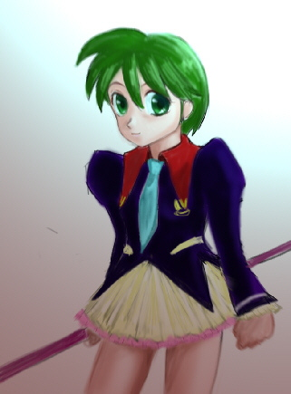

戻る・タイトルページへ戻る
林の中に開けた広場。
静かな中に剣戟の音が響く。同時に光の干渉が周りを浮かび上がらせる。
「ふん……」
「くっ、やはりこの程度じゃ無理か」
地上に降りた頼香は地面を蹴り、オーラスティックを飛行モードにして後ろへと滑るように飛び退く。
いつもの戦闘服姿に、ランドセルのような機械を背負っている頼香。
間合いを取って再び体勢を整える。
対するはシェンナ。余裕のある表情で空中に浮かんでいる。
オーラスティックを握り直して、再びシェンナへ向けて地面を蹴る。
「これなら！」
お互いが近づく刹那、オーラブレードにオーラを展開して斬りつける。今度は赤い刃の輝きも強い。
それを掌から生じる光の刃で平然と受け止めるシェンナ。
「無駄ですよ」
「どうかな。今度は全力のつもりだ」
頼香がシェンナに覆い被さる形でもみ合っている。
攻撃中はオーラスティックでの飛行が出来ないので、こういう戦法を取らざるを得ない。
「頼香さん、いつでもどうぞ」
「頼香ちゃん、こっちもＯＫ！」
通信バッチを通して果穂と来栖の声が聞こえる。
「わかった。動きを止めたらシーリングシステム稼働だ」
頼香のかけ声と共に、背中の機械が軽い唸りをあげる。
もみ合っている頼香とシェンナ。むしろ頼香がシェンナの動きを止めるのに必死だ。
シェンナも応戦に必死。お互い全力を出している。
「それで……全力ですか。口程じゃ……ありませんね」
「余裕なさそうに言っても説得力無いな！」
「くっ……では……」
ふっとオーラブレードを受け止める力を弱めるシェンナ。
自ら下降する事で頼香の懐からふわりと抜け出す。
「逃がすか！」
すぐさまスティックを飛行モードに切り替えて上昇するが、シェンナの動きの方が早かった。
攻撃。
武器モードに戻して牽制する頼香だが、少し距離が足りなかった。
空を切るオーラブレード。
「外した？」
その隙に上から右手に蹴り込まれる。
「隙だらけです」
「あぐっ……しまった！」
シェンナの蹴りが決まり、オーラブレードを手元から離してしまう頼香。
空中を飛び回る手段が無くなった訳で、あとは地上に向けて自由落下だ。
衝撃吸収材を織り込んでいる戦闘服とは言え、助かる高度ではない。
落下の風を全身に受けながら、短く叫ぶ。
「コンピューター、プログラム停止！」
森の情景が消えて、ホロデッキの格子状の壁が現れる。
頼香は全身を軽く床にぶつける事になったが、大したことはないだろう。
らいか大作戦１２
作：かわねぎ
画：ステレオ 様
宇宙艦「U.S.S.さんこう」ミーティングルーム。
フルーツパフェを頬張りながら、テーブルを囲んでいる。
体を動かした後の甘い物は美味しい。
体のあちこちをさする頼香。それを心配そうに見る来栖。
「うー、いてて。あの高さでも落ちると痛いな」
「頼香ちゃん大丈夫？ 医療室で手当てする？」
「いや、戦闘服のお陰でそこまでひどくない。心配かけて悪いな」
頼香達が先程やっていたのはシェンナとの戦闘シミュレーション。
今日で３回目で３回とも失敗している。
からめるがヒゲの先にクリームを付けたまま、三人に告げる。
「シーリングシステムの改良はこれ以上は無理だ。あとは頼香次第だな」
「分かってるさ。でもシェンナの動きを止めるだけでも大変なんだぞ」
「僕と果穂が作ったシステム４基。人数３人。手駒はこれだけなんだ」
「倒さずに封印って相当大変だぞ。戦術を変えてみるか……」
からめるの言葉にスプーンをくわえたまま考え込んでしまう頼香。
体が疲れてる頼香に、これ以上負担はかけさせたくないと果穂は思う。
「頼香さん、今日はもう体を休めてください。一番負担がかかっているんですから」
「ありがとう。でもせっかく果穂達が作ったシーリングシステムだからな」
「いいんですよ。もっと有効な戦術は私も考えますから」
シーリングシステムは、シーリングカプセルを強化、発展させた物である。
４基のシステムによってパワーのあるシェンナを封印してしまおうと考えているのだ。
ただし小型化が出来ず、一つがランドセル位の大きさになってしまっている。
テーブルの上のもけも頼香をねぎらう。
「頼香ちゃん、ご苦労様でちゅ。無理しちゃダメでちゅよ」
「ああ。今日はもう上がるよ。疲れた」
そう言いながらパフェのフルーツをもけに分け与える頼香。
「あと例の話、艦隊本部から催促来てるでちゅ。こんなに早いとは思わなかったでちゅね」
「ずいぶん急かすな。こっちの気も知らないで」
「途中でもいいから切り上げろ、だそうでちゅよ」
もけの話を聞きながらコツコツとパフェのカップをスプーンで叩く頼香。
ちょっと苛立っているようにも、寂しそうにも見える。
来栖はそんな頼香の表情の変化を見逃さなかった。
「頼香ちゃん、例の話って？」
「何でもないよ。っていうか艦隊の指令。早くイーター回収しろだと」
「頼香さんは本職は軍人ですからね。指令には従わなくてはなりませんね」
「大変だね」
「ああ……俺はライカ・フレイクスだから……」
本当は頼香に体を提供してくれたライカ少尉のふりをしているだけなのだが、来栖にはそれは隠している。
しばらく黙々とパフェを口に運ぶ頼香。
いずれ目の前の二人にも次の任務に就く事を知らせる必要がある。
ただ、言い出せない。それは二人との別れを意味する事だから。
「なあ、俺たちいつまでも友達だよな」
考えていた思いを、ふっと口に出してしまう。
「ええ。二人とも大切なお友達です」
「当たり前じゃない。どうしたの？ 急に」
「ちょっとな。ふと思っただけ……そうそうパフェっていえば今度駅前にさ……」
きょとんとした果穂と来栖を前に、急に明るく振る舞う頼香。
そんな頼香を見て、不思議そうな顔をする来栖と果穂だった。
夕方、頼香達のマンション。
頼香と果穂が夕食の準備をしている側で、いつものように祐樹が席についていた。
手持ち無沙汰の合間に、頼香からダウンロードしてもらったデータパッドに目を通している。
データパッドには、テラン星のニュースや軍広報、テラン星の天気予報などが入っている。
祐樹は毎日目を通していて、それが習慣になっているのだ。
「なんだって？」
思わず声を上げてしまう祐樹。頼香も果穂もびっくりしてしまう。
「ゆーき、どうした？」
「い、いや……故郷のリトンシティの降水確率が８０％だって」
「あのな、もっとましな嘘つけよ。で？ 何かニュースでもあったのか」
「ニュースって訳じゃないけど。知り合いが載ってたんだ」
ひょいと覗き込むもけ。別に面白くもない軍広報の人事消息のページだった。
「調べ物するんだったら、いつものようにさんこうにアクセスしていいでちゅよ」
「ああ、ありがとう」
頼香達もそれ以上祐樹には注意を払わず、夕食の準備を続けた。
祐樹もデータパッドに大人しく見入っている。
やがて出来上がった料理が運ばれてくる。
「いつまで広げてんだよ。さ、ご飯ご飯」
頼香は祐樹のデータパッドをどかせて料理の皿を並べていく。プレラット星人用の小皿も忘れない。
今日は煮魚がメインらしい。それに数品並ぶ。
「今日も美味しそうだね」
「付け合わせも純和風で揃えてみました」
「さ、食べようぜ」
お揃いのエプロンを外して頼香と果穂も席に着く。
「「「「「いっただきま〜す」」」」」
会話も弾みながら進む夕食。
「あ、ゆーき。おかわりどうだ？」
「お願いするよ」
「ちょっと、待ってな」
祐樹への給仕には手を出さない果穂が、微笑みながらその光景を見ている。
頼香と祐樹を見ていると、新婚家庭にお邪魔しているような感じもしてくる。
それでいて二人の態度が嫌みに感じられないのは、自然体でお互い接しているからだろうか。
食事も終わり、果穂が食後のお茶を入れていると、もけが祐樹に尋ねてきた。
「祐樹しゃん、軍広報で何か面白い記事でもあったでちゅか？」
「連載の『魔法の少尉ブラスター・マ……」
「残念ながら今日は休載でちゅよ。祐樹しゃんも好きでちゅね」
「結構面白いんだよね」
「作者の『薬用さるびあ』しゃんは民間人らしいって話でちゅよ」
何か濃い会話になりつつある祐樹ともけ。果穂もお茶を注ぎながら興味深くその話を聞いている。
「冗談はおいといて、知り合いが除隊したのを見つけてね。それで驚いたって訳」
「ゆーきの知り合いって、女の人か？」
頼香がちょっと詰問口調で祐樹に尋ねる。嫉妬も少し含まれているようだ。
「男の人。というか、頼香から見ればおじさんって歳かな。大佐をしてた人だよ」
「ふ〜ん。ならいいけど」
何がいいのかよく分からないが、祐樹は話を続ける。
「うん。頼香、艦隊司令部から回収を急げとか命令が来ていない？」
「催促が来たよ。早くイーター回収しろって」
「そうなんだ。やっぱり……」
ちょっと考え込む表情になる祐樹
頼香は頼香で半分しか答えていない。
果穂の手前、転属命令については、ここでは話せない。
頼香も祐樹もお互い別な事を考えているのだが、どちらも複雑そうな表情だ。
果穂からお茶を勧めながら、それとなく探りを入れてみる。
「頼香さん？ どうしたんですか、ぼーっとして」
「え、あ、果穂。何でもないよ。司令部の命令を考えてただけ」
「ならいいのですが。何か心配事があればいつでも相談に乗りますよ」
「ああ、その時は頼むぜ」
果穂も席についてお茶をすする。頼香の方をちらりと見ると、今度はため息をついているようだった。
マンション、祐樹の部屋。
夕食の後、頼香ともけを自分の部屋に招き入れていた。
「どうしたんでちゅか。僕まで呼び出して」
「夜遅くなるのにごめんね。二人ともジュースでも飲むかい」
「さっきお茶飲んだし、いいや」
「僕もいいでちゅ」
祐樹の勧めを断ると、頼香はソファーに腰を下ろして、クッションを抱きかかえる。
もけは頼香の肩の上だ。
「話、あるんだろ」
「うん。頼香、艦隊司令部から本星への召還命令とか来ていない？」
「……召還はないけど、転属命令が来てる」
「そうなんだ……」
「後は容疑者を捕まえる事と、U.S.S.イントリューとフォスの拿捕」
「なるほどね」
頼香の答えにうなづくと、わずかな間をおいて、話し始める祐樹。
「頼香には話しておかなくちゃと思ってね」
「イーターがらみの事か」
「うん。君達にはどう命令されたか知らないけれど、事の顛末を話しておくよ」
そして、イーター開発から地球へ来るに至るまでの経緯を話し始めた。
それは頼香がもけから聞いた話、つまりは軍の命令とはかなり食い違いのある物だった。「それじゃ、ゆーきは全然悪く無いじゃないか。スピナーでさえも」
「でも軍から見ればそうじゃないだろうね。U.S.S.イントリューも勝手に使ってるし」
「それはやむを得ずだろ。そうだ、証拠さえあれば大丈夫だ。軍の連中を納得させられれば……」
「イントリューとフォスの記録が証拠になるね」
「それじゃ俺たちへの指令は証拠を確保しろという事か。まあイーター自体はこの一件の重要な証拠だからな」
「イーター開発に携わっている部隊が証拠隠滅に動いてるとばかり思ってたよ」
それまで黙って聞いていたもけが、祐樹の目の前にストンと飛び降りる。
「僕たちの艦隊はその開発部隊とは別の指揮系統にあるんでちゅ」
「違うのかい？ 僕はてっきり、その指揮下にあるものだと思ってた」
「どうやら僕たちが急がされてるのは、隠匿する動きが出てきたからでちゅね」
もけの言葉に驚く祐樹だが、もけはかまわず続ける。
「おそらく今回の指令の意味は祐樹しゃん達の保護でちゅね」
頼香はもけを両手ですくい上げ、視線を合わせて尋ねる。
「それじゃ、ゆーきへの逮捕状ってのは？」
「二人の保護が最優先でちゅ。おそらくお咎めは少しで済むと思いまちゅ」
「よかったぁ」
ほっとした表情になる頼香。なによりも祐樹が罪に問われることがないことが嬉しい。
全く罪状がないわけではないのだが、情状酌量の余地があることが予想される。
「ただ地球でイーターのトラブルがあったのはまずかったでちゅ」
「研究途中のイーターが逃げ出してしまったからね」
「犠牲者も少なからず出てまちゅからね」
犠牲者と聞いて、もけ、それに頼香はライカの事を考えてしまい、胸が痛む。
それに果穂もイーターの犠牲者であるし、広い意味では祐樹も犠牲者といえよう。
だが、頼香達への指令には関係者全員の身柄拘束である。
「問題はスピナー博士でちゅね」
「ああ、あいつが俺たちに投降するはずがないな。頭痛いところだな」
ため息混じりに話す頼香ともけ。
最悪力ずくでも捕まえなくてはならない。
狡猾な相手ではあるが、力押しならば頼香にとっては楽勝とまでは行かずとも、十分に勝算がある。
「最悪、一戦交える必要があるな」
「頼香、待って。僕が博士を説得してみるよ」
もけに息巻く頼香を制する祐樹。気を削がれた格好になってしまった。
「ゆーきが？」
「うん。僕だって博士とつきあいが長いんだ。なんとか納得させたい」
「だって、祐樹をその姿にした本人だし、ゆーきだって恨んでいるんだろ」
「それは今でもあるけどね。博士にとってはやむを得ない選択だったんだ。それに命を救ってもらった」
その点ではスピナーに感謝すべき所である。
だが、今までさんざん邪魔されてきた相手である。それはスピナー側から見ても同じ事だろう。
素直に協力、というのは今更できる物ではないのではないか。
そんな頼香の考えが表情に出ていたのか、祐樹が頼香に言い聞かせるようにして続ける。
「他に選択肢がないことを突きつければ何とかなるはずだよ。やってみるよ」
祐樹の話が終わったところで、一言、頼香にたずねる。
「ところで、果穂さんや来栖さんにはこれからの事を話したのかい？」
頼香は無言でクッションを抱きかかえ直す。
確かにいつか言わなければならない事だ。しかし、どのように言えばいいのだろうか。
単に「テランに戻ります。さようなら」とでも？
「その様子だとまだ話してないみたいだね」
「果穂や来栖と別れるんだ。それがどんなに辛いか、わかるだろ」
「ああ。僕だって今までいろんな人と出会って、別れてきた。わかるつもりだよ」
そっと頼香の肩を抱き寄せる祐樹。頼香もそれに身を任せる。
「でもね、頼香。みんなとは二度と会えない訳じゃない。僕とだってそうだ」
「俺だって子供じゃないんだ。理屈ではわかってるよ。でもな……」
言い淀む頼香にそっと続ける祐樹。
「頼香はまだ若いから、これからも多くの出会いと別れを体験していくよ」
「ああ。だけど、その出会いも別れも大切にしたいからな。なあ、ゆーき」
「なんだい」
「たとえテランと俺の赴任地が離れていても、ずっと……きっと……」
それ以上は言葉にならない頼香。
すべてが片づけば、二人の少女との別れの次に祐樹との別れが待っている。
その気持ちを汲み取った祐樹が頼香の肩を抱き寄せる力を少しだけ強くした。
「それは約束するよ……」
数日後、５年１組教室。
休み時間に頼香が職員室に呼ばれて教室を出ていった。
それを見送った来栖が、斜め後ろの果穂の席に声をかける。
「ね、果穂ちゃん、ちょっといい？」
「ええ。何ですか？」
果穂も椅子をずらして来栖の方に向き直る。
「頼香ちゃんのこと。この所様子が変じゃない？」
「数日前からですね。来栖さんも気づいてましたか」
「心配だよ。何か考え事してたり、ぼーっとしてたり」
「というか、私達に何か隠し事してるみたいですね」
果穂の言うとおり、確かに頼香は隠し事をしている。
頼香本人は態度には出していないつもりだが、来栖も果穂も微妙な部分を感じ取っているようだった。
「年頃の女の子には秘密の一つや二つありますよ。でも今回は何か違う感じがします」
「話してくれないよね、たぶん」
「ええ、おそらく。頼香さんも大人ですから、自分で抱え込んでしまうんです」
「力になれないのかな」
本当に親身な表情で心配する来栖。
やはり大切な友達だけあって、沈みがちな表情の頼香を見ているのは辛い物があるのだろう。
「そうですね……ちょっと考えてみたのですが……」
来栖の耳元に顔を寄せ、何か囁きかける果穂。
ふむふむと頷いていた来栖だが、やがて「はあ？」という表情になり、最後に驚いたような顔で果穂を見る。
「ええっ？ 私がやるの？」
黙って頷く果穂。来栖は半分呆れたような声で聞き返す。
「しかもそんな少年マンガに出てくるケンカじゃあるまいし」
「男の子っぽい頼香さんには丁度いいと思いませんか？」
ちょっとイタズラっぽい笑顔を浮かべて続ける果穂。
頼香は男の子っぽいというよりも、精神は男そのものなのだが。
そして、ふっと真顔に戻る。
「それに、何かきっかけがあれば話してくれるはずです。頼香さんもそれを探しているんじゃないですか」
「確かにきっかけにはなりそうだけど……」
「やっていただけますか」
「果穂ちゃんじゃダメなの？ それか果穂ちゃんと私の二人でとか」
来栖は思った疑問を果穂にぶつける。
「相手はあの頼香さんです。来栖さんの方が私より運動神経いいですし、それに来栖さん一人の方が効果的なんです」
「そっか。わかったよ。上手くできるかちょっと不安だけど」
「大丈夫です。きちんとフォローしますから」
「それじゃ今日の放課後だね。頼香ちゃん、か……」
主のいない席を見つめながら、そうつぶやく来栖だった。
その日の放課後。宇宙艦「U.S.S.さんこう」ホロデッキ。
果穂が新しいフォーメーションを考えついたと言う事で、その練習で集まっている。
３人とも戦闘服姿。頼香がコンピューターに指示を出す。
「プログラム開始……あれ？」
だが風景が変わっただけで、相手のシェンナの画像は出てこない。
首を傾げる頼香のそばに、来栖が歩み寄る。
「頼香ちゃん、今日はちょっと違うプログラムなんだよ」
「新しいシミュレーションじゃないのか？ どういうことだ？」
頼香の疑問には答えず、黙ってオーラスティックを一振りする来栖。
念をこめて緑色のオーラブレードを展開する。
来栖も戦闘に参加するのかと思い、来栖の肩に手を添えようとする。
横に大きくオーラブレードを薙ぐ来栖。

慌てて飛び退く頼香だが、切っ先が頼香の髪をかすめる。
「わ、何すんだ！」
「これが今日のシミュレーションだよ」
「何でこんな事」
自分のオーラスティックを握り直し、来栖に向き合う頼香。
オーラブレードを展開させ、来栖のブレードを受け流す構えを取る。
それを待っていたかのように頼香に斬りつける来栖。
頼香は来栖の一撃一撃を丁寧に受け流す。
「お前の練習、に、付き、合えって、事か」
正直言って、下手な攻撃。リズム感も何もないので、受ける頼香もテンポが狂ってしまう。
「違うよ」
「なら何でこんな事！」
「頼香ちゃんのため。私達三人のためだよ」
そう言いながら、徐々にオーラブレードの出力を上げていく来栖。
頼香もそれに気づいて出力を上げる。
「頼香ちゃんに聞きたい事があるの」
「普通に聞けばいいだろう！」
「言っても話さないくせに。私達が気づいてないと思ってるの？」
来栖の言葉にはもちろん思い当たる節がある。
近いうちに来る果穂や来栖達との別れ。それを言い出せずにいるのだ。
知ってたのか？
頼香の心にわずかに動揺が走り、来栖のオーラブレードを受け止め損ねる。
「しまった！ オーラシールド！」
頼香のブレードの光が消え、周りに光の壁が広がる。
来栖のオーラ能力ではその壁を破る事は出来ずに、緑色のブレードを弾き返す。
「戦闘服のシールドに頼るんだね」
「作った果穂を信頼してるからな」
「じゃあ、私の事も信頼してよ！」
再びオーラブレードを展開する頼香。
来栖のブレードを再度受け流す。
来栖も攻撃を続けているのに息が切れていないのはさすがだ。
「これは俺の問題なんだよ」
「そうやっていつも自分ばっかり知ったような顔するんだから！」
「何だと」
「私たちに言えないことなの？ そんなに信用ないの？」
畳みかける来栖の言葉。頼香の心に痛いほど染み渡る。
頼香にとって言ってしまう事で何が怖いかと言えば、来栖や果穂と離れてしまう事。
だがライカ・フレイクスでいようとする限り、来栖達との別れは避けられない。
そんなジレンマが頼香の心を乱す。
「黙って聞いてれば！ 俺だって考えてるんだ！」
そう叫ぶと、来栖への間合いを踏み込み、攻撃に打って出る。
一転、頼香のブレードを受ける側に回る来栖。
二人の技量の差から、辛うじて頼香の攻撃を受け流すが、それも一苦労だ。
「か、考えてるって自分の事だけでしょ、ライカ・フレイクス少尉！」
普段来栖が頼香の事を軍人として見る事はない。
あくまで「戸増頼香」として接しているし、それが当たり前と思っているのだ。
それが分かっているだけに、わざとそう呼ぶ来栖にかっとなってしまう頼香。
「子供のくせに、生意気言うな！」
その感情に従って、頼香のオーラブレードの輝きが増す。
相手が来栖と言う事もあって自制してきたが、今度は遠慮せずに全力で来栖に刃を向ける。
「頼香ちゃんだって子供でしょ！ オーラシールド！」
受けられないと悟った来栖は、さっとオーラシールドを自分の周りに展開させる。
ほぼ無敵の防御能力を持つ来栖。これを破るのは頼香の力を持ってしても難しい。
渾身のオーラを込めて来栖のシールドを破ろうとする。
「これ以上……喋るな！」
熱くなる頼香に対して冷静になっている来栖。
頼香はある種の自信を持った雰囲気に気づくが、一瞬遅かった。
頼香の動きがシールドに止められた瞬間、来栖はさっとオーラスティックを振る。
「ごめんね。シールドブレイク！」
「なにっ！？」
来栖のかけ声と共にシールドが割れ、そのままオーラの破片となって頼香の身に襲いかかる。
外傷こそないが、来栖のオーラを全身に受けた頼香がその場に崩れ落ちた。
来栖が頼香の体をしっかりと抱きとめる。
「頼香ちゃん！ 頼香ちゃん！」
その頃、幽霊屋敷ことスピナー博士の研究所。
その一室で、スピナーが壁のモニターを見つめている。
モニターには祐樹がダウンロードしてもらった軍広報とそれから検索してきた軍の人事データが表示されている。
その後ろに立っている祐樹。
「軍内部で動きがあります。今ならテランに戻るチャンスだと思います」
「イーター開発に携わった者が除隊、それに配置転換か……確かに慌ただしいな」
「僕たちには逮捕状が出てるけど、軍の誤解を解くなら今しか……」
モニターを背にして祐樹の方を向くスピナー。
「しかし責任者の大佐を幼女のイーターと融合させてしまったのに、今頃になって除隊か。変だと思わんか」
「元の姿に戻ったとか？」
「それは無理だろう。死んだか、殺されたか。良くて開発自体の抹消か隠匿だな」
「開発の抹消って……回収したイーターはどうなります？」
「表だって連合の手で研究が続けられない以上、公式には破棄されるかもしれない」
あくまで冷静な口調のスピナーに祐樹はついかっとなってしまう。
スピナーに対してではなく、連合の予想される態度に対して。
「そんな、イーターだって一つの生命ですよ」
「連中にとってはイーターは脅威を感じさせる物でしかない」
「もう人を襲ってオーラを吸収する不完全体じゃないのに」
「それを分かっていないから、我々を捜しているし、あのお嬢さんも派遣されてくる」
連合に対する不信感を露わにするスピナー。
「頼香達はあの連中とは違う。協力してやってください」
頼香への、すなわち連合への協力を頼む祐樹。断られるのは承知の上だ。
「全てをみすみす連合に渡せというのか」
「はい。研究の完成を、実態を世間にも知ってもらうチャンスです」
「あのお嬢さんだって所詮は軍の下っ端に過ぎないのだぞ。世論に訴える前に軍に潰される」
「頼香とその上官なら信頼できます。もし今を逃すと、本星から別働隊の派遣ですね」
「次は当然開発を隠匿する連中か」
「だから頼香達がいる今しかないんです」
反論せずに考え込んでしまうスピナー。ここぞとばかり言葉を続ける祐樹。
「いずれ、シェンナが博士を狙ってきます。博士一人で立ち向かえるか、考えてください」
そう言い残して、スピナー博士の研究室を出ていく祐樹。
それを黙って見送りながら、小さく呟く。
「いずれ連合に知らせなければならない事……ならばお嬢さん方を最大限利用させてもらうか……」
U.S.S.さんこう医療室。
ベッドに横たわる頼香の脇で、その手をしっかりと握る来栖。
治癒のオーラがうすぼんやりと頼香を包む。
やがて気がつく頼香。
「うん……来栖……」
「頼香ちゃん！ ごめんね。こんなになるなんて思ってもなかったから」
心底安心したという表情と申し訳ないという表情が混じっている来栖。
それを制して頼香が身を起こそうとする。手を添える来栖。
「ありがとな。でもだいぶ堪えたぞ。こんな事して何のつもりだよ」
「頼香ちゃん、最近様子が変だったから」
「俺が？」
「うん。心配事があるんだったら言ってみてよ。力になれるかも知れないでしょ」
「気づかれてたか」
仕方ないな、という表情をする頼香。おそらく果穂も気づいている事だろう。
おそらく今回の事は果穂が仕組んだ物だろう。
腹も立つが、二人が自分の事を考えてくれている事を感じて、嬉しい気持ちもあった。
「ミーティングルームで話すよ。果穂もいる所で」
そう言ってベッドから降りようとした時に、医療室に果穂が入ってくる。
「頼香さん、気がつきましたか」
「ああ。散々な目にあったけどな。果穂の思惑通りだな」
こいつめ、といった視線を果穂に送るが、果穂は涼しい顔でとぼける。
「何の事でしょう」
「まあいい。ミーティングルームに行こうぜ。二人に話す事もあるしな」
ミーティングルーム。
三人ともけ、からめるが集まっている。
頼香は果穂と来栖に任務が終われば地球を離れなければならない事を告げた。
もちろん、地球を離れるのはもけとからめるも一緒だ。
果穂も来栖も頼香が言い淀んでいた訳を理解したようだった。
確かに別れは切り出しにくいだろう。
「え、それじゃ、頼香ちゃん、テラン星へ帰っちゃうの？」
「テランって訳じゃないらしい。次の任務でまた何処かに行くらしい」
「ゆーき先生には話したの？」
来栖の問いにうなずく頼香。地球での別れの後は祐樹との別れも控えている訳だ。
果穂は珍しく強い口調でらいかに問いかける。
「無理な事だと分かっていますが言わせてください。他に方法は無いんですか」
「他の方法って？」
「このまま『戸増頼香』として地球に留まる方法です」
果穂は言外に、ライカ・フレイクスのふりをする事はやめろという意味を含めている。
もちろん頼香もそれは分かっている。
「それは俺も考えた。だけど、俺がライカである以上、連合士官として生きていくしかないんだ」
どうやら頼香は既に自分の中で結論を出していたらしい。
自分を救ってくれたライカとして、生きていくつもりだ。
「そりゃ会いにくくなるけど、今生の別れって訳じゃないんだ。な、もけ」
「頼香ちゃんが除隊すれば、テランか地球に留まるしかないでちゅ。それは祐樹しゃんを取るか果穂ちゃん達を取るか二者択一なんでちゅ」
「軍にいれば宇宙艦で地球に来る事だって出来るんだ。だから……」
頼香の言葉を途中で遮る果穂。最初から果穂が口を挟む事ではなかったようだ。
「わかりました。決意は強いようですね。もう頼香さんを迷わす事は言いません」
「果穂……」
「ごめん、頼香ちゃん。何て言っていいか分かんない。私は頼香ちゃんと別れたくないよ」
果穂とは違って、別れを切り出されて、落ち着いて考えられない来栖だった。
小学生の考え方としては、来栖の方が自然だろう。
来栖はもけとからめるに手を差し出して、手のひらに乗せる。
「もけちゃんやからめるちゃんとだって別れたくないよ」
「それは僕たちだって同じでちゅ」
「ああ。僕だって来栖や果穂と別れるのは辛いって思ってる」
もけとからめるに頬ずりする来栖に頼香が手を添えてそっと話しかける。
「来栖にも分かって欲しいんだ。今すぐにとは言わない」
「頼香ちゃん……」
「言ったろ、二度と会えない訳じゃないんだ」
「うん……」
来栖の年齢では純粋にショックなのだろう。
理屈では頼香が去ってしまう事は分かるのだが、それを受け入れるとなると話は別だ。
だから頼香も急がせない。じっくりと分かってもらえばいいと思っている。
その後のお茶会はいつになく物静かなものとなっていた。
数日後。いつもの下校時。
三人で仲良く帰る道すがら、児童公園の前で来栖と別れる。
「今日は塾じゃないんだけど、ごめんね、用事があるの」
「ああ。それじゃ、また明日な」
「気を付けてくださいね」
来栖の駆けていく姿を見送る頼香と果穂。
それでは、と帰ろうとする果穂を頼香が留める。
「ちょっと公園に寄っていかないか」
「構いませんけど」
怪訝そうな顔をしながらも、頼香と並んでブランコに腰掛ける果穂。
少し漕いでみると、鎖の軋む音が静かな公園に響き渡る。
少し寂しそうな声で話し出す頼香。
「ここで人生変わっちゃったんだよな……」
果穂もブランコを漕ぎながら、静かに、だがきっぱりと答える。
「私も同じです。でも後悔はしていません」
「俺もだよ。ライカとして生きていく決心も付けた」
そう言ってブランコに勢いを付けて、前へぴょんと飛び降りる頼香。
「似たもの同士、果穂には色々と世話になったな」
「そういうセリフは別れが決まった時に言ってください。今からしんみりしてどうするんですか」
「そうだな。ごめん」
果穂もブランコから降りて、頼香の目の前に歩み寄る。
そして頼香の頬を両手で軽く押さえる。頼香の方はいきなりそんな事をされて、当惑している。
さっきまでブランコの鎖を握っていた果穂の手が冷たく感じる。
それも心地よい冷たさだ。
「それに、このところ頼香さんの笑顔を見ていません。ゆーきさんにも寂しい顔しか見せていないんでしょう」
「果穂の言うとおりだな……でも無理に笑顔を作る気分じゃない」
「今は難しいかも知れませんね。ですが別れる時はお互いに笑顔で別れましょう」
ぴしゃり。
果穂がそう言って、軽く両手で頬を挟むように叩く。
頼香の頬に痛みではなく、心地よい刺激が走る。
「約束ですよ」
「ああ。果穂には心配かけ通しだな」
いつも一緒にいるだけに、同じ境遇だけに、頼香の事を気遣ってくれる果穂。
果穂の両手に手を添えながら頼香はその心遣いに感謝していた。
人気がほとんど無い公園だが、そんな二人に声をかける者がいた。
「お嬢さん方、仲のいい事だな。帰らなくていいのか」
それは二人も予想しなかった人物、スピナーであった。
＜つづく＞
あとがき
らいか大作戦最終話、という約束でしたが、前後編に分割して発表いたします。前回の１１話から大分時間が経ってしまいました。ラストのクライマックスを納得した形で出したいと思いますので、もう少々完結まで時間をくださいませ。それに１３話だと区切りがいいでしょ。今回、ステレオ様よりいただいたイラストを挿絵に使わせていただきました。
戻る・タイトルページへ戻る